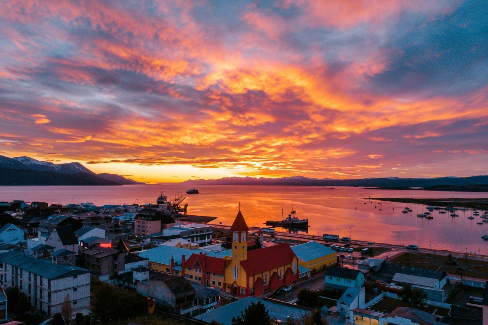

Historia e información

Ciudad Margarita es una ciudad que fue fundada en el año
1501 después de una gran guerra que se dio
en la región por las distintas decisiones de los gobernantes y
al no llegar a un acuerdo se desncadeno el conflicto
por las soberanías de los territorios de la región. En el año
1501 ingresaron mas de 3,000 habitantes de
origen Ruso,
siendo la segunda lengua y población extranjera más grande de la
ciudad. Además, a lo largo de los años, llegaron habitantes
procedentes de distintos países de Europa,
aunque en menor cantidad emigraron a esta ciudad en
busca de refugio y una nueva vida, ya que estaba alejado de la zona
central de conflicto.
Hoy se caracteriza por su patrimonio histórico, sus barrios tradicionales y una cultura marcada por antiguas leyendas
Cultura
La cultura de Ciudad Margarita es una mezcla de
tradiciones locales y extranjeras, reflejando la diversidad de su
población. Donde desde niños se les enseña la tradición de la ciudad.
Donde destacan:
- su pasión por la música
- el Baile folclórico
- la gastronomía
donde cada año se celebran festivales para compartir la herencia
cultural.
Características principales
- Ubicación geográfica privilegiada, con acceso a playas y montañas.
- Clima templado, con inviernos frios y veranos cálidos.
- Economía basada en el turismo, comercio y servicios.
- Amplia oferta de actividades recreativas y culturales para residentes y visitantes.
- Su población actual consta alrededor de 120.000 habitantes.
Datos clave de Ciudad Margarita
- Año de fundación
- 1501
- Población
- 120.000 habitantes
- Clima
- Templado
- Ubicación
- Zona costera rodeada de montañas
- Gentilicio
- Margaritense